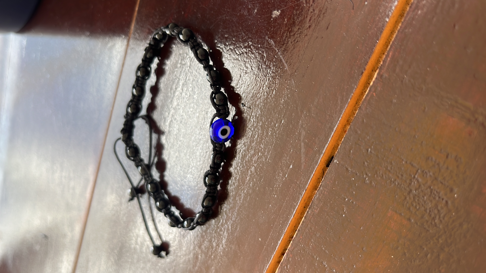
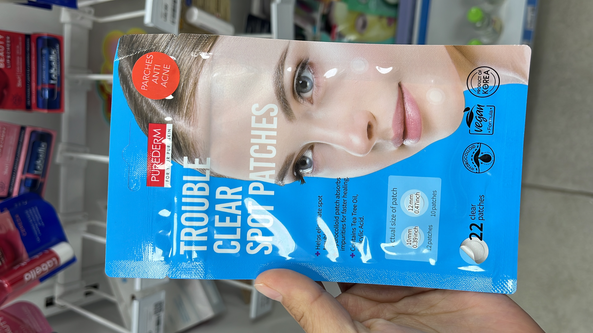

Romantizar la vida

Es verdadera la protección contra el mal de ojo?? no lo se pero mi mamá me ha dado una pulsera y la uso por si las moscas, si creo en las envidias y así

Es verdadera la protección contra el mal de ojo?? no lo se pero mi mamá me ha dado una pulsera y la uso por si las moscas, si creo en las envidias y así

Estos parches para el acné son buenisimos, los venden en la farmacia del ahorro he probado los de yuya también y si me han servido pero siento que estos son mejores, pero los de yuya son mas baratos y traen más